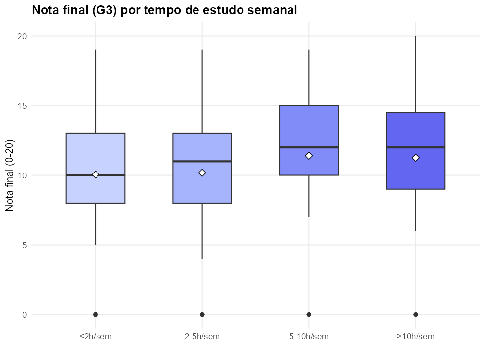
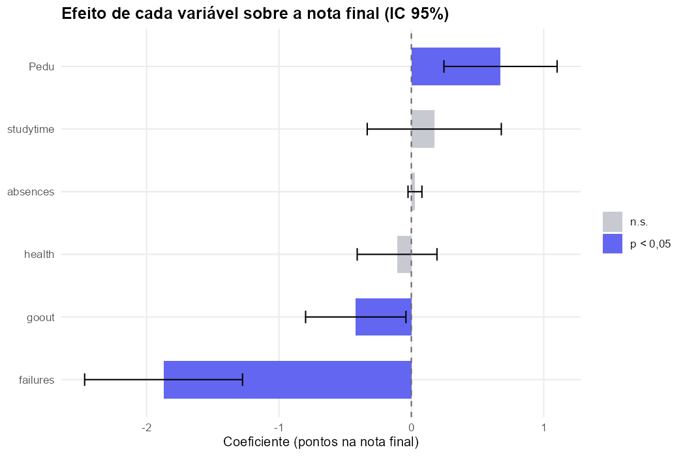
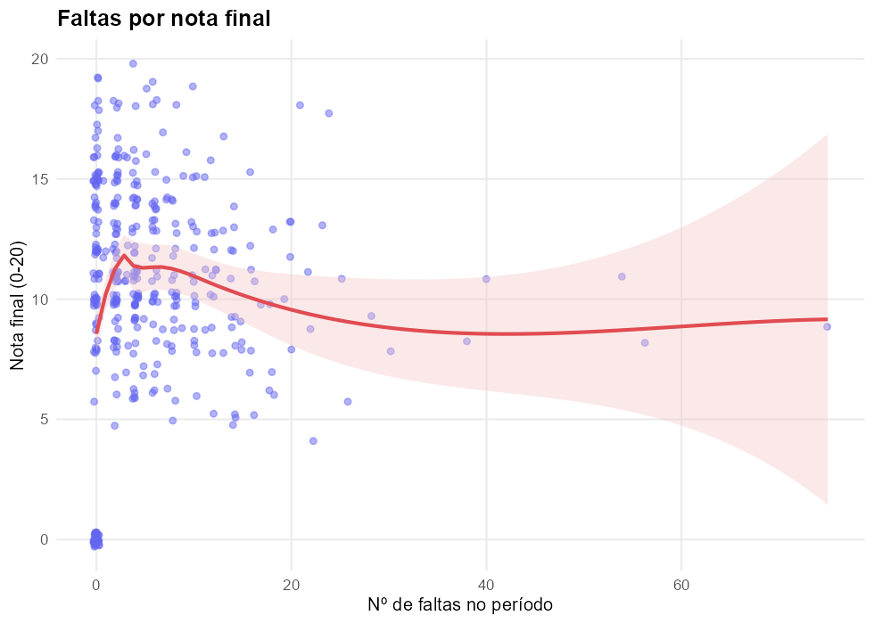
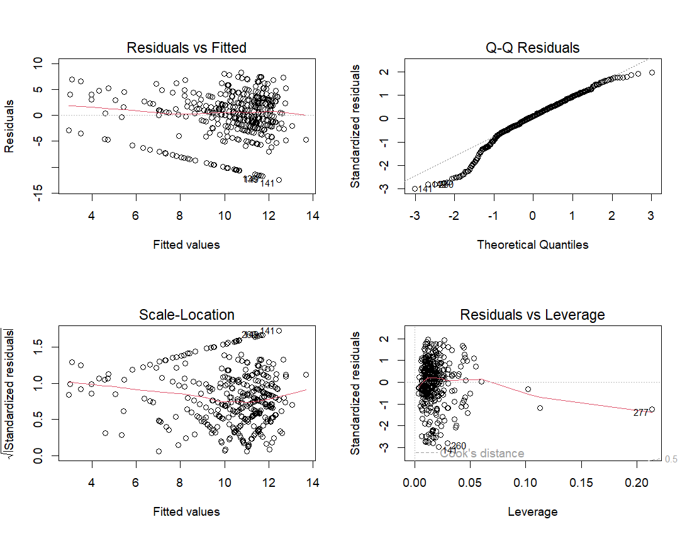

ANOVA, verificação de pressupostos e regressão múltipla aplicados a dados reais de desempenho escolar — incluindo o que fazer quando os pressupostos do teste "certo" não se sustentam.
O senso comum diz que quem estuda mais horas por semana tira nota melhor. Duas perguntas estatísticas escondidas nessa frase: (1) essa diferença é real ou é variação aleatória da amostra? (2) mesmo se for real, tempo de estudo ainda importa quando comparado a outros fatores — reprovações passadas, escolaridade dos pais, tempo de lazer?
Estudantes foram agrupados em 4 faixas de tempo de estudo semanal (<2h, 2–5h, 5–10h, >10h) e comparados pela nota final (G3, 0–20).

| Teste | Estatística | p-valor | Conclusão |
|---|---|---|---|
| ANOVA (F) | F(3,391) = 1,73 | 0,161 | Não significativo |
| Shapiro-Wilk (resíduos) | W = 0,936 | < 0,001 | Resíduos não normais |
| Levene (variâncias) | F = 1,29 | 0,277 | Variâncias homogêneas |
| Kruskal-Wallis | χ² = 7,58 | 0,056 | Marginal, não significativo |
Se tempo de estudo sozinho não separa grupos, talvez o efeito exista mas seja pequeno demais pra aparecer isolado — ou talvez outras variáveis expliquem mais. Modelo de regressão linear múltipla: nota final em função de tempo de estudo, reprovações anteriores, faltas, escolaridade dos pais (a maior entre mãe e pai), frequência de saídas sociais e estado de saúde autodeclarado.


| Variável | Coeficiente | p-valor |
|---|---|---|
| Reprovações anteriores | −1,87 | < 0,001 |
| Escolaridade dos pais | +0,67 | 0,002 |
| Frequência de saídas sociais | −0,42 | 0,031 |
| Tempo de estudo | +0,17 | 0,503 |
| Faltas | +0,03 | 0,306 |
| Saúde autodeclarada | −0,11 | 0,484 |
VIF de todas as variáveis abaixo de 1,2 (sem multicolinearidade). Teste de Breusch-Pagan não rejeitou homocedasticidade (p = 0,145). Shapiro-Wilk nos resíduos indicou desvio de normalidade (p < 0,001) — esperado com uma variável resposta limitada entre 0–20 e concentração de notas baixas; o R² moderado (15%) já sinaliza que fatores não medidos aqui (motivação, qualidade do professor, capital cultural) explicam a maior parte da variação.

| Item | Detalhe |
|---|---|
| Fonte dos dados | Cortez & Silva (2008), UCI Machine Learning Repository |
| N | 395 estudantes, 2 escolas secundárias de Portugal |
| Testes aplicados | ANOVA, Shapiro-Wilk, Levene, Kruskal-Wallis, Tukey HSD, regressão linear múltipla, VIF, Breusch-Pagan |
| Software | R — aov, lm, car, ggplot2 |